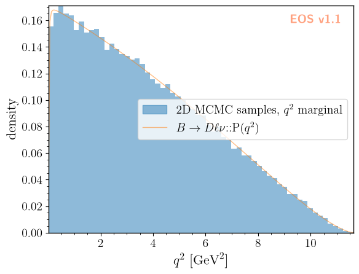
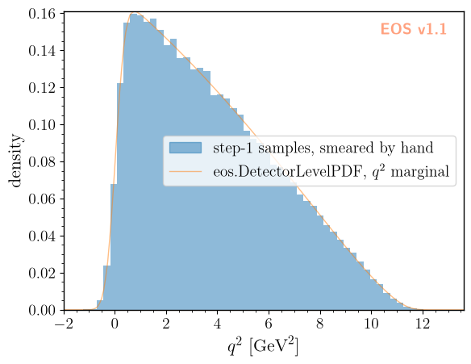
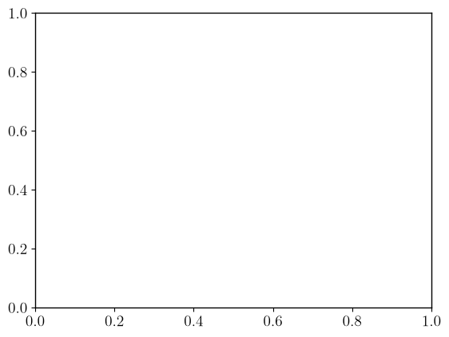
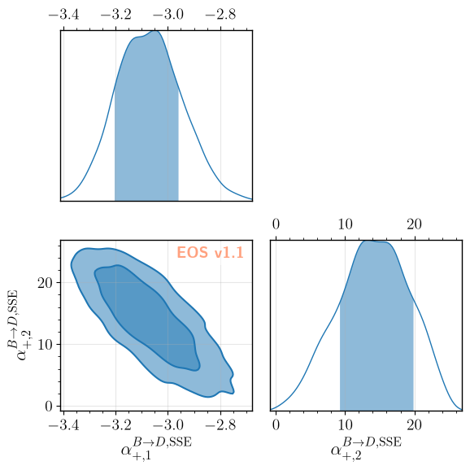
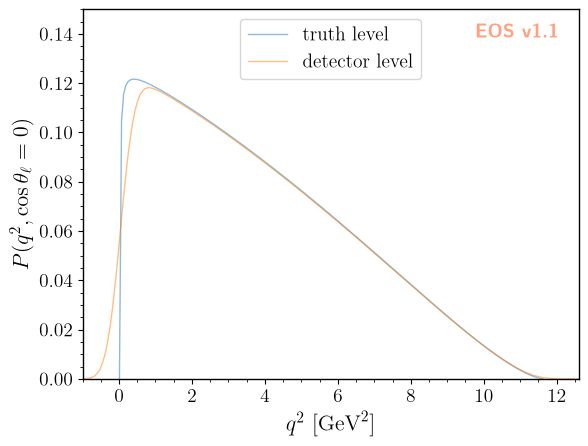

Detector-Level PDFs
EOS can convolve a truth-level probability density function (PDF) with a detector resolution function to obtain a detector-level PDF, using eos.DetectorLevelPDF. The convolution is carried out numerically, via a multi-dimensional discrete Fourier transform, and its result is itself a SignalPDF: it can be evaluated, sampled, and plotted like any other PDF.
This notebook illustrates the full pipeline for the decay \(\bar{B}^0\to D^+\mu^-\bar\nu\):
we build the truth-level 2D PDF in \(q^2\) and \(\cos\theta_\ell\), sample it, and check that the \(q^2\) marginal of the samples agrees with the built-in 1D PDF;
we build a Gaussian detector resolution in \(q^2\) (with no smearing in \(\cos\theta_\ell\)) from EOS expressions, and combine it with the truth-level PDF into a detector-level PDF;
we validate the convolution by comparing a histogram of the step-1 samples, smeared by hand, against the 1D \(q^2\) marginal of the detector-level PDF;
we write a set of “observed” (smeared) events to an eos.data.UnbinnedLikelihood data object, and fit the two leading \(\bar{B}\to D\) form factor shape parameters to them, driving the fit through an eos.AnalysisFile as in the other user-guide notebooks;
we validate the fit by comparing the recovered parameters against the values used to generate the samples in step 1.
we declare a figure of the detector-level PDF in the analysis file, and draw it with the
draw-figuretask.
The convolution that a detector-level PDF performs is circular: every axis of its grid must be padded with a region in which both the truth PDF and the resolution are negligible, or probability will wrap around from one edge of the grid to the other. We use this padding throughout the notebook, and return to it explicitly in step 2.
[1]:
import eos
import numpy as np
import os
# all data files written by this notebook live beneath this base directory
EOS_BASE_DIRECTORY = './detector-level-base'
1. Truth-level 2D PDF
We use the decay \(\bar{B}^0\to D^+\mu^-\bar\nu\), described by the two kinematic variables \(q^2\) and \(\cos\theta_\ell\). We work in the Weak Effective Theory (model: WET), with every Wilson coefficient set to zero except for \(c_{VL}\), which is kept at its Standard-Model value. The muon keeps its physical mass. A massless lepton would make the density drop discontinuously to zero at \(q^2 = 0\), a step that the sampling grid cannot represent; at finite \(m_\mu\)
the density instead vanishes smoothly at the threshold \(q^2 = m_\mu^2\). In exchange, the scalar form factor \(f_0\) now contributes, and its parameters are held fixed in the fit in section 4.
[2]:
params = eos.Parameters()
# WET, with only the Standard-Model value of c_VL switched on
params.set('cbmunumu::Re{cVL}', 1.0)
params.set('cbmunumu::Im{cVL}', 0.0)
params.set('cbmunumu::Re{cVR}', 0.0)
params.set('cbmunumu::Im{cVR}', 0.0)
params.set('cbmunumu::Re{cSL}', 0.0)
params.set('cbmunumu::Im{cSL}', 0.0)
params.set('cbmunumu::Re{cSR}', 0.0)
params.set('cbmunumu::Im{cSR}', 0.0)
params.set('cbmunumu::Re{cT}', 0.0)
params.set('cbmunumu::Im{cT}', 0.0)
# 'SSE' is the default parametrization of B->Dlnu; it is named explicitly, since the fit below
# varies the @SSE parameters
OPTIONS = eos.Options(**{ 'l': 'mu', 'q': 'd', 'model': 'WET', 'form-factors': 'SSE' })
# the true values of the form factor shape parameters, used below to generate samples and, in the
# end, to judge the closure of the fit
ALPHA1_TRUE = float(params['B->D::alpha^f+_1@SSE'])
ALPHA2_TRUE = float(params['B->D::alpha^f+_2@SSE'])
print(f'alpha^f+_1@SSE = {ALPHA1_TRUE}')
print(f'alpha^f+_2@SSE = {ALPHA2_TRUE}')
alpha^f+_1@SSE = -2.9843
alpha^f+_2@SSE = 3.8517
[3]:
# the physical support of q2 is [m_mu^2, (m_B - m_D)^2]; cos(theta_l) is unconstrained on [-1, +1]
Q2_PHYS_MIN = float(params['mass::mu'])**2
Q2_PHYS_MAX = (float(params['mass::B_d']) - float(params['mass::D_d']))**2
# setting the initial kinematics for the truth PDF, which is used to generate samples
# both q2 and cos(theta_l) will be modified by the MCMC sampler; however, the initial
# values must be within the physical support of the PDF
truth_kinematics = eos.Kinematics({
'q2': 2.0, 'q2_min': Q2_PHYS_MIN, 'q2_max': Q2_PHYS_MAX,
'cos(theta_l)': 0.0, 'cos(theta_l)_min': -1.0, 'cos(theta_l)_max': 1.0,
})
truth_pdf = eos.SignalPDF.make('B->Dlnu::P(q2,cos(theta_l))', params, truth_kinematics, OPTIONS)
rng = np.random.mtrand.RandomState(23480)
# a stride of 10 keeps the samples nearly uncorrelated, since they serve as independent events in section 4
truth_samples, truth_density = truth_pdf.sample_mcmc(N=100000, stride=10, pre_N=1000, preruns=3, rng=rng)
Prerun 0 out of 3
Prerun 0: acceptance rate is 81%
Prerun 1 out of 3
Prerun 1: acceptance rate is 23%
Prerun 2 out of 3
Prerun 2: acceptance rate is 28%
Main run: started ...
Main run: acceptance rate is 27%
We compare the \(q^2\) marginal of the 2D samples against the built-in 1D PDF B->Dlnu::P(q2), using the EOS figure framework. The samples are first stored as an eos.data.ImportanceSamples object with uniform weights, so that a histogram1D item can display them; a signal-pdf item plots the 1D PDF.
[4]:
# the 1D PDF, also the reference for the convolution in section 3
q2_kinematics = eos.Kinematics({'q2': 2.0, 'q2_min': Q2_PHYS_MIN, 'q2_max': Q2_PHYS_MAX})
q2_pdf = eos.SignalPDF.make('B->Dlnu::P(q2)', params, q2_kinematics, OPTIONS)
q2_log_norm = q2_pdf.normalization()
# MCMC samples carry equal weights
eos.data.ImportanceSamples.create(os.path.join(EOS_BASE_DIRECTORY, 'truth', 'samples'),
[truth_kinematics['q2'], truth_kinematics['cos(theta_l)']],
truth_samples, np.ones(truth_samples.shape[0]))
figure_args = f'''
plot:
xaxis: {{ label: '$q^2$', unit: '$\\textnormal{{GeV}}^2$', range: [{Q2_PHYS_MIN}, {Q2_PHYS_MAX}] }}
yaxis: {{ label: 'density' }}
legend: {{ position: 'center right' }}
items:
- {{ type: 'histogram1D', label: '2D MCMC samples, $q^2$ marginal', color: 'C0',
variable: 'q2', bins: 60, range: [{Q2_PHYS_MIN}, {Q2_PHYS_MAX}],
datafile: '{EOS_BASE_DIRECTORY}/truth/samples'
}}
- {{ type: 'signal-pdf', label: '$B\\to D\\ell\\nu$::P($q^2$)', color: 'C1',
pdf: 'B->Dlnu::P(q2)', options: {{ l: 'mu', q: 'd', model: 'WET', form-factors: 'SSE' }},
variable: 'q2', range: [{Q2_PHYS_MIN}, {Q2_PHYS_MAX}], resolution: 200,
kinematics: {{ q2_min: {Q2_PHYS_MIN}, q2_max: {Q2_PHYS_MAX} }}
}}
'''
figure = eos.figure.FigureFactory.from_yaml(figure_args)
figure.draw()

2. A Gaussian detector resolution
We build a resolution over the offsets of \(q^2\) and \(\cos\theta_\ell\) as an EOS expression: a Gaussian of width \(\sigma_{q^2} = 0.3\,\mathrm{GeV}^2\) in the \(q^2\) offset, and an effectively vanishing width in the \(\cos\theta_\ell\) offset, which realises “no smearing” as a numerical Kronecker delta once sampled on the grid below. Both factors use the unit-area kernel Kernel::Gaussian(u, mu, sigma). The expression is handed directly to
eos.DetectorLevelPDF.make_from_expression, which samples it on the grid of offsets.
[5]:
SIGMA_Q2 = 0.3 # GeV^2
EPS_COS = 1.0e-3 # cos(theta_l): a width far below the grid spacing acts as a numerical delta
kernel_expr = (
f'Kernel::Gaussian({{q2}}, 0, {SIGMA_Q2}) * '
f'Kernel::Gaussian({{cos(theta_l)}}, 0, {EPS_COS})'
)
The convolution is circular, so the grid must extend well beyond the physical \(q^2\) range on both sides. Here we choose to pad by about \(6\,\sigma_{q^2} \approx 1.8\,\mathrm{GeV}^2\) so that both the truth PDF and the resolution are negligible at the wrap-around boundary. A reader adapting this example to a different resolution width or a different decay should re-check this padding first: it is the most common source of a silently wrong result. No such padding is needed for \(\cos\theta_\ell\), since it is not smeared and already spans its full physical range. The number of points per axis must be even, per the requirements of the real discrete Fourier transform used internally.
[6]:
AXES = [
{ 'variable': 'q2', 'min': -2.0, 'max': 13.6, 'points': 128 },
{ 'variable': 'cos(theta_l)', 'min': -1.0, 'max': 1.0, 'points': 16 },
]
# a dedicated cache: this DetectorLevelPDF is only used standalone in this notebook, not as part of
# an eos.LogLikelihood
cache = eos.ObservableCache(params)
detector_pdf = eos.DetectorLevelPDF.make_from_expression(cache, 'B->Dlnu::P(q2,cos(theta_l))', OPTIONS, AXES, kernel_expr)
# DetectorLevelPDF never updates the cache it was given; the owner of the cache does
cache.update()
3. Validating the convolution
We smear the step-1 \(q^2\) samples by hand with the same Gaussian, and compare them against the \(q^2\) marginal of detector_pdf. Since the resolution factorises into a \(q^2\) Gaussian and a \(\cos\theta_\ell\) delta, this marginal equals the 1D convolution of the truth PDF’s \(q^2\) marginal with the same Gaussian – exactly what the hand-smeared samples estimate. We first check the marginal numerically, by integrating detector_pdf over \(\cos\theta_\ell\) and
comparing against a quadrature of the 1D convolution.
[7]:
def detector_marginal_q2(pdf, q2_values, n_cos=41):
"""Marginalize a 2D detector-level PDF over cos(theta_l) by numerical integration.
log_pdf() is evaluate(), i.e. the unnormalized log density, so the PDF's own log-normalization
is subtracted to obtain a proper density -- exactly as for any other SignalPDF.
"""
log_norm = pdf.normalization()
cos_values = np.linspace(-1.0, 1.0, n_cos)
result = np.empty_like(q2_values)
for i, q2v in enumerate(q2_values):
density = np.array([np.exp(pdf.log_pdf([q2v, cv]) - log_norm) for cv in cos_values])
result[i] = np.trapezoid(density, cos_values)
return result
rng_smear = np.random.mtrand.RandomState(90210)
q2_smeared = truth_samples[:, 0] + rng_smear.normal(0.0, SIGMA_Q2, size=truth_samples.shape[0])
hist_edges = np.linspace(AXES[0]['min'], AXES[0]['max'], 61)
hist_centers = 0.5 * (hist_edges[:-1] + hist_edges[1:])
detector_curve = detector_marginal_q2(detector_pdf, hist_centers)
# the 1D convolution of the truth PDF's q2 marginal with the same Gaussian, by quadrature
q2_fine = np.linspace(Q2_PHYS_MIN, Q2_PHYS_MAX, 400)
p1d_fine = np.array([np.exp(q2_pdf.log_pdf([v]) - q2_log_norm) for v in q2_fine])
reference = np.array([
np.trapezoid(p1d_fine * np.exp(-0.5 * ((c - q2_fine) / SIGMA_Q2)**2) / (np.sqrt(2.0 * np.pi) * SIGMA_Q2), q2_fine)
for c in hist_centers
])
deviation = np.abs(detector_curve - reference).max() / reference.max()
print(f'max deviation from the quadrature reference: {deviation:.2e}')
print(f'sample mean q2: {q2_smeared.mean():.4f} PDF: {np.trapezoid(hist_centers * reference, hist_centers) / np.trapezoid(reference, hist_centers):.4f}')
max deviation from the quadrature reference: 4.91e-03
sample mean q2: 3.7732 PDF: 3.7877
We now plot the hand-smeared samples against a detector-level PDF using the EOS figure framework. Plot items of type detector-level-pdf build an eos.DetectorLevelPDF from a truth-level PDF, a grid, and a resolution expression, and plot it as a function of one of its variables, at fixed values of the others. Here we use the 1D truth PDF B->Dlnu::P(q2) on the \(q^2\) axis of the grid above, which yields the \(q^2\) marginal directly. As in section 1, a histogram1D item
displays the samples.
[8]:
eos.data.ImportanceSamples.create(os.path.join(EOS_BASE_DIRECTORY, 'smeared', 'samples'), [truth_kinematics['q2']],
q2_smeared.reshape(-1, 1), np.ones_like(q2_smeared))
Q2_AXIS = AXES[0]
figure_args = f'''
plot:
xaxis: {{ label: '$q^2$', unit: '$\\textnormal{{GeV}}^2$', range: [{Q2_AXIS['min']}, {Q2_AXIS['max']}] }}
yaxis: {{ label: 'density' }}
legend: {{ position: 'center right' }}
items:
- {{ type: 'histogram1D', label: 'step-1 samples, smeared by hand', color: 'C0',
variable: 'q2', bins: 60, range: [{Q2_AXIS['min']}, {Q2_AXIS['max']}],
datafile: '{EOS_BASE_DIRECTORY}/smeared/samples'
}}
- {{ type: 'detector-level-pdf', label: 'eos.DetectorLevelPDF, $q^2$ marginal', color: 'C1',
pdf: 'B->Dlnu::P(q2)', options: {{ l: 'mu', q: 'd', model: 'WET', form-factors: 'SSE' }},
variable: 'q2', range: [{Q2_AXIS['min']}, {Q2_AXIS['max']}], resolution: 200,
axes: [ {{ variable: 'q2', min: {Q2_AXIS['min']}, max: {Q2_AXIS['max']}, points: {Q2_AXIS['points']} }} ],
kernel: 'Kernel::Gaussian({{q2}}, 0, {SIGMA_Q2})'
}}
'''
figure = eos.figure.FigureFactory.from_yaml(figure_args)
figure.draw()

4. An unbinned fit
We now generate a set of “observed” events by smearing all of the step-1 truth-level samples, write them to an eos.data.UnbinnedLikelihood data object together with the (unnormalized) resolution kernel expression, and fit the form factor shape parameters \(\alpha^{f_+}_1\) and \(\alpha^{f_+}_2\) in the “SSE” parametrization to them; we keep \(\alpha^{f_+}_0\), \(V_{cb}\), and every other parameter fixed. The fit is driven
through eos.AnalysisFile, reading detector-level.yaml, which declares the unbinned-B-to-D likelihood component as type: unbinned. We sample the posterior with dynamic nested sampling, using eos.tasks.sample_nested, and stop once the effective sample size reaches 2000.
[9]:
# the standalone PDF is no longer needed; free its grid before the fit builds its own
del detector_pdf, cache
from eos.data.unbinned_likelihood import UnbinnedExpressionResolutionDescription
N_FIT = truth_samples.shape[0]
rng_fit = np.random.mtrand.RandomState(271828)
q2_obs = truth_samples[:, 0] + rng_fit.normal(0.0, SIGMA_Q2, size=N_FIT)
cos_obs = truth_samples[:, 1]
observations = np.column_stack([q2_obs, cos_obs])
# the analysis file's relative 'data' path is resolved against the base directory passed to the
# tasks, so the data object must be written beneath it
eos.data.UnbinnedLikelihood.create(
os.path.join(EOS_BASE_DIRECTORY, 'detector-level-data', 'observed-events'),
axes=AXES,
resolution=UnbinnedExpressionResolutionDescription(expression=kernel_expr),
observations=observations,
)
[10]:
eos.tasks.sample_nested('detector-level.yaml', 'FF-fit', base_directory=EOS_BASE_DIRECTORY,
nlive=250, dlogz=1.0, min_ess=2000)

5. Closure
We compare the weighted posterior mean and standard deviation of \(\alpha^{f_+}_1\) and \(\alpha^{f_+}_2\) against the values used to generate the samples in step 1, and report the pulls \((\text{fit} - \text{true}) / \sigma_\text{fit}\).
The two parameters are not equally well determined. The unbinned likelihood constrains \(\alpha^{f_+}_1\) well, and its pull is a genuine closure test. \(\alpha^{f_+}_2\), by contrast, is only weakly constrained: a \(q^2\) spectrum smeared with \(\sigma_{q^2} = 0.3\,\textnormal{GeV}^2\) carries little information about the sub-leading shape coefficient. Its posterior is broad and strongly anti-correlated with \(\alpha^{f_+}_1\). The prior for \(\alpha^{f_+}_2\) is therefore chosen wide: a narrow prior would cut off part of this correlated posterior, and shift \(\alpha^{f_+}_1\) along with it.
[11]:
samples = eos.data.ImportanceSamples(os.path.join(EOS_BASE_DIRECTORY, 'data', 'FF-fit', 'samples'))
alpha1_fit, alpha2_fit = np.average(samples.samples, axis=0, weights=samples.weights)
alpha1_std, alpha2_std = np.sqrt(np.average((samples.samples - [alpha1_fit, alpha2_fit])**2, axis=0, weights=samples.weights))
pull1 = (alpha1_fit - ALPHA1_TRUE) / alpha1_std
pull2 = (alpha2_fit - ALPHA2_TRUE) / alpha2_std
print(f'alpha^f+_1@SSE: true = {ALPHA1_TRUE:.4f}, fit = {alpha1_fit:.4f} +/- {alpha1_std:.4f}, pull = {pull1:+.2f}')
print(f'alpha^f+_2@SSE: true = {ALPHA2_TRUE:.4f}, fit = {alpha2_fit:.4f} +/- {alpha2_std:.4f}, pull = {pull2:+.2f}')
alpha^f+_1@SSE: true = -2.9843, fit = -3.0702 +/- 0.1229, pull = -0.70
alpha^f+_2@SSE: true = 3.8517, fit = 14.1005 +/- 5.0460, pull = +2.03
We illustrate the posterior with an eos.figure.CornerFigure, which shows the 1D marginal posteriors on its diagonal and the 2D marginal posterior below it. Kernel density estimates (kde: true) smooth over the finite number of weighted samples.
[12]:
figure_args = f'''
type: 'corner'
contents:
- {{ path: '{EOS_BASE_DIRECTORY}/data/FF-fit/samples', label: 'posterior', color: 'C0', kde: true }}
'''
figure = eos.figure.FigureFactory.from_yaml(figure_args)
figure.draw()
Computing KDE for samples of variable 'B->D::alpha^f+_1@SSE'
Computing KDE for samples of variables 'B->D::alpha^f+_1@SSE' and 'B->D::alpha^f+_2@SSE'
Computing KDE for samples of variable 'B->D::alpha^f+_2@SSE'

6. Plotting from the analysis file
Figures can also be declared in the analysis file, and drawn with the draw-figure task. detector-level.yaml declares the figure B-to-D-detector-level. It shows the truth-level PDF and the detector-level PDF at fixed \(\cos\theta_\ell = 0\) as functions of \(q^2\), at the parameter point used to generate the events. Instead of an explicit grid and resolution, the detector-level-pdf item refers to the data object of the fit through its data key, and reuses its grid and
resolution.
[13]:
eos.tasks.draw_figure('detector-level.yaml', 'B-to-D-detector-level', base_directory=EOS_BASE_DIRECTORY)
